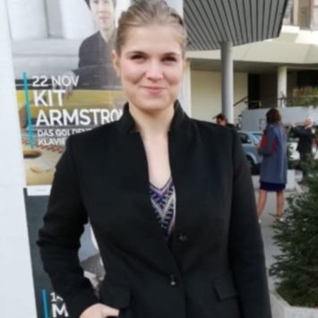

Willkommen bei LösungsW.erk
Ihr Ingenieurbüro für Gutachten, Akkreditierung und Fahrzeugtechnik
Über mich
Ich bin Julia Schützenhofer, beratende Ingenieurin mit Expertise in Unfallanalytik, Akkreditierung und technischer Dokumentation. Mit einem fundierten technischen Hintergrund unterstütze ich Sie dabei, komplexe Anforderungen einfach und effizient zu meistern.
Leistungen
Technische Gutachten
Unabhängige Gutachten, insbesondere für Verkehrsunfälle und Fahrzeugtechnik – fundiert analysiert und nachvollziehbar dokumentiert.
Akkreditierung & QM
Beratung und Begleitung von Laboratorien und Dienstleistern bei der Einführung und Optimierung von Qualitätsmanagementsystemen (ISO/IEC 17025).
Technische Dokumentation
Erstellung von Berichten, Konformitätsbewertungen (CE), Behördenkommunikation sowie Dokumenten gemäß Normen wie EMV oder Maschinenrichtlinie.
Kontakt
Sie möchten mit mir zusammenarbeiten oder haben Fragen? Ich freue mich auf Ihre Nachricht!
Telefon: +43 123 456 789
E-Mail: info@loesungswerk.at
Impressum
Julia Schützenhofer
Musterstraße 12
12345 Musterstadt
Österreich
Telefon: +43 123 456 789
E-Mail: info@loesungswerk.at